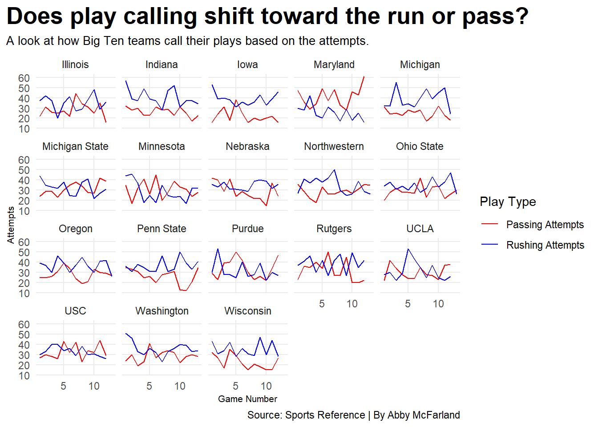
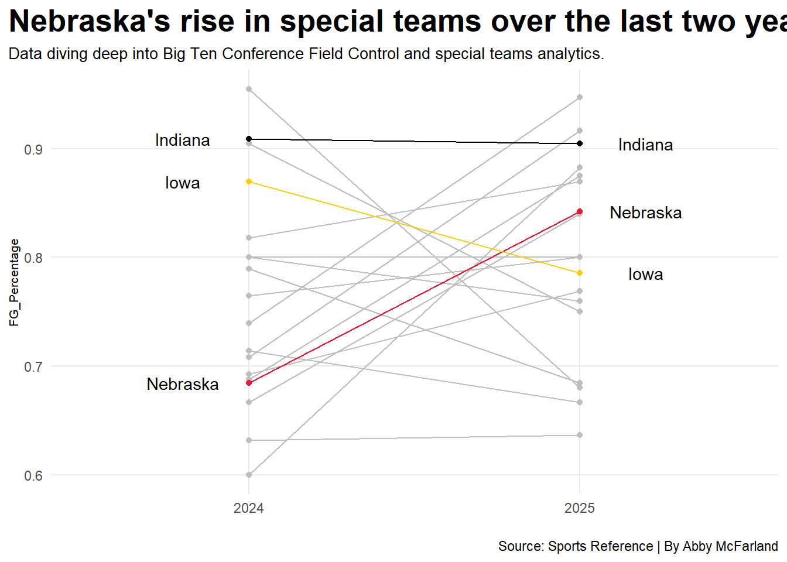

Is Matt Rhule the answer that Nebraska Football needs?
College Football
Team
Players
Author
Abby McFarland
Published
April 10, 2026
For over a decade now, Nebraska football has been trying to get back to the football they used to be in the 1970s through the 1990s. During that time, the program secured five national championships under Bob Devaney and Tom Osborne as a team. They were a team that built consistency and discipline and were competitive against other teams. Saturdays in Lincoln became one of the craziest atmospheres in college football and still is.
Since then, Nebraska has struggled to find the identity that once made it the dominant team in college football. With coaching changes over the years, different QBs in and out of the program, and not having the ability to win the close games has played a major role in the program.
The year 2022 hit, and when Scott Frost got fired that is when Matt Rhule’s name entered the conversation as the new head coach of Nebraska. The Husker fans were hoping this was the answer that Nebraska football needed.
As the 2025 season approaches, it is year 3 for Matt Rhule, and in his coaching history, he is known for year 3 being the year when every team he’s coached comes alive.
Now, Husker fans are wondering what the 2025 season will look like for Nebraska football.
Let’s take a look at some numbers.
Sports Reference’s college football site helps us dive deeper into each team, exploring their strengths, weaknesses, and areas of improvement.
To see if Nebraska succeeded last season, let’s break down the Big Ten teams rushing and passing stats and see how each team compares to the Huskers.
Code
library(tidyverse)library(gt)logs <-read_csv("footballlogs25.csv")Big10 <- logs |>filter(conference =="Big Ten Conference")ggplot() +geom_line(data = Big10, aes(x = game_number, y = passing_att, group = team_full, color ="Passing Attempts")) +geom_line(data = Big10, aes(x = game_number, y = rushing_att, group = team_full, color ="Rushing Attempts")) +scale_color_manual(values =c("Passing Attempts"="red", "Rushing Attempts"="blue"),name ="Play Type" ) +facet_wrap(~team) +labs(x ="Game Number", y ="Attempts", title ="Does play calling shift toward the run or pass?", subtitle ="A look at how Big Ten teams call their plays based on the attempts.",caption ="Source: Sports Reference | By Abby McFarland" ) +theme_minimal() +theme(plot.title =element_text(size =20, face ="bold"),axis.title =element_text(size =8), plot.subtitle =element_text(size =10), panel.grid.minor =element_blank(),plot.title.position ="plot" )

Nebraska, at the beginning of the season, started with a dominant passing game, but as the season went on, the Huskers’ passing wasn’t as strong, while the rushing game improved through the end of the season. Most of the top Big Ten teams stayed consistent throughout the season with passing attempts.
Special teams play a major role in college football and often are the deciding factor in winning and losing the game. Have the Huskers’ special teams improved over the years?
Code
specialteams <-read_csv("specialteams.csv")kicking2024 <- specialteams |>filter(Conf =="Big Ten") |>mutate(FG_Percentage = FGM/FGA)Special2025<-read_csv("specialteams.csv") |>mutate(Player=gsub("*","",Player,fixed =TRUE)) |>mutate(Season=2025)Special2024 <-read_csv("Scoring2024.csv") |>mutate(Player=gsub("*","",Player,fixed =TRUE)) |>mutate(Season=2024) Special <-bind_rows(Special2024, Special2025)kicking <- Special |>filter(Conf =="Big Ten") |>filter(FGA >0) |>group_by(Team, Season) |>summarise(season_fgm =sum(FGM),season_fga =sum(FGA) ) |>mutate(FG_Percentage = season_fgm / season_fga)nu <- kicking |>filter(Team =="Nebraska")IA <- kicking |>filter(Team =="Iowa")IU <- kicking |>filter(Team =="Indiana")ggplot() +geom_line(data = kicking, aes(x = Season, y = FG_Percentage, group = Team), color ="grey") +geom_point(data = kicking, aes(x = Season, y = FG_Percentage, group = Team), color ="grey") +geom_line(data = nu, aes(x = Season, y = FG_Percentage, group = Team), color ="#e41c38") +geom_point(data = nu, aes(x = Season, y = FG_Percentage, group = Team), color ="#e41c38") +geom_line(data = IA, aes(x = Season, y = FG_Percentage, group = Team), color ="#FFCD00") +geom_point(data = IA, aes(x = Season, y = FG_Percentage, group = Team), color ="#FFCD00") +geom_line(data = IU, aes(x = Season, y = FG_Percentage, group = Team), color ="black") +geom_point(data = IU, aes(x = Season, y = FG_Percentage, group = Team), color ="black") +geom_text(data=nu |>filter(Season ==max(Season)), aes(x=Season + .2, y=FG_Percentage, group=Team, label=Team)) +geom_text(data=nu |>filter(Season ==min(Season)), aes(x=Season - .2, y=FG_Percentage, group=Team, label=Team)) +geom_text(data=IA |>filter(Season ==max(Season)), aes(x=Season + .2, y=FG_Percentage, group=Team, label=Team)) +geom_text(data=IA |>filter(Season ==min(Season)), aes(x=Season - .2, y=FG_Percentage, group=Team, label=Team)) +geom_text(data=IU |>filter(Season ==max(Season)), aes(x=Season + .2, y=FG_Percentage, group=Team, label=Team)) +geom_text(data=IU |>filter(Season ==min(Season)), aes(x=Season - .2, y=FG_Percentage, group=Team, label=Team)) +scale_x_continuous(breaks=c(2024, 2025), limits=c(2023.5,2025.5)) +theme_minimal() +labs(x ="", title ="Nebraska's rise in special teams over the last two years", subtitle ="Data diving deep into Big Ten Conference Field Control and special teams analytics.",caption ="Source: Sports Reference | By Abby McFarland" ) +theme_minimal() +theme(plot.title =element_text(size =20, face ="bold"),axis.title =element_text(size =8), plot.subtitle =element_text(size =10), panel.grid.minor =element_blank(),plot.title.position ="plot" )

By the simple rating, Nebraska succeeded in special teams in 2025, compared to the 2024 season. As for Iowa, they went downhill in 2025. Special teams play a crucial role in a team’s success.
Nebraska football has had a hard time maintaining consistent quarterbacks in the program over the years. When Dylan Raiola committed, many fans thought this was the guy to turn the program around. During the 2025 season, Raiola suffered a broken fibula, which became an important factor in turning the program around. A freshman quarterback, TJ Lateef, stepped in and performed well as a freshman who was not expected to start this season.
His stats were showing promise for the futures program.
From backup to leader: Lateef contribution to Nebraska's offense
Player
Team
Yards
Touchdown
Interceptions
Yards Per Attempts
Jayden Maiava
USC
3711
24
10
9.2
Julian Sayin
Ohio State
3610
32
8
9.2
Dante Moore
Oregon
3565
30
10
8.7
Fernando Mendoza
Indiana
3535
41
6
9.3
Athan Kaliakmanis
Rutgers
3124
20
7
8.5
Demond Williams Jr.
Washington
3065
25
8
8.7
Luke Altmyer
Illinois
3007
22
5
8.2
Malik Washington
Maryland
2963
17
9
6.3
Bryce Underwood
Michigan
2428
11
9
7.2
Preston Stone
Northwestern
2400
17
12
6.5
Drake Lindsey
Minnesota
2382
18
6
6.1
Ryan Browne
Purdue
2153
9
10
6.4
Dylan Raiola
Nebraska
2000
18
6
8.0
Nico Iamaleava
UCLA
1928
13
7
6.0
Mark Gronowski
Iowa
1741
10
7
6.6
Aidan Chiles
Michigan State
1392
10
3
6.9
Ethan Grunkemeyer
Penn State
1339
8
4
7.5
Alessio Milivojevic
Michigan State
1267
10
3
7.3
Drew Allar
Penn State
1100
8
3
6.9
TJ Lateef
Nebraska
904
5
1
7.3
Hunter Simmons
Wisconsin
664
2
7
5.6
By: Abby McFarland | Source: Sports Reference
It is the year of 2026. What will this year hold for the Huskers? They have been working in the off-season to get new faces to make an impact on the program, and Husker fans are hoping this is the end of the struggles of Nebraska football and hoping this is the turning point to where Nebraska football used to be.